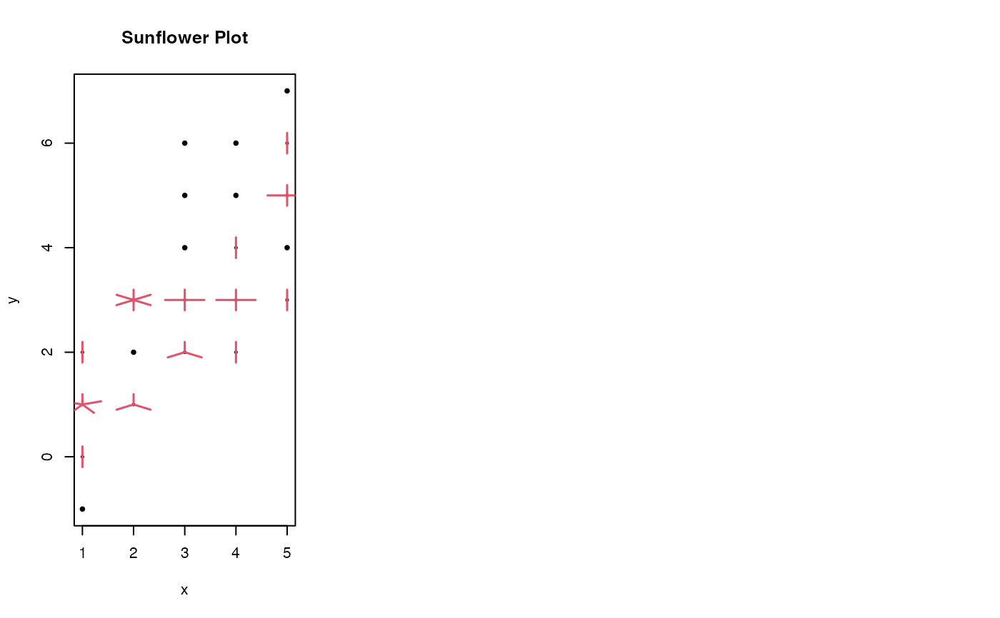

space.RdSpace points in an x-y plot so they don't overlap.
space(x, y, s=1/50, na.rm=TRUE, direction="x")
| x | numeric vector of x coordonates. |
|---|---|
| y | numeric vector of x coordonates. |
| s | either a single numeric value or 2 element vector specifying the minimum distance between points in the x and y dimensions as a fraction of the x and y range. Defaults to 1/50. |
| na.rm | logical indicating whether pairs where one or both elements are missing should be removed. Defaults to TRUE. |
| direction | "x" or "y", indicating which direction points should be moved to accomplish spacine. |
In an x-y plot where at least one variable has discrete levels several points may be plotted at or very near the same coordonates. This makes it difficult to guage the number of points in a specific region. A common method of resolving this problem is to 'jitter' the points by adding random noise.
This function takes a different approach to the same problem.
When there are two or more points with the same (x,y) value (or within x+-s[1] and x+-s[2]), it spaces these out in the x direction so that the points are separated by at least distance s.
Another method for dealing with overploting is available in the
sunflowerplot function.
list with two components
(modified) x location for each input point
y location of each input point
x <- rep(1:5, 10) y <- round(rnorm(length(x),x)) prepar <- par("mfrow") par(mfrow=c(1,3)) # standard x-y plot: noverlapping points are hidden plot(x,y) title("Standard Plot") # 'spaced' plot: overlapping points are spread out and visible plot(space(x,y)) title("Plot with 'space'") # 'spaced' plot: overlapping points are spread out along y and visible plot(space(x,y, direction='y'))title("Plot with 'space', direction='y' ")# 'sunflower' plot, another approach, overlapping points are # indicated via petals sunflowerplot(x,y) title("Sunflower Plot") # \testonly{ # check that missign values correctly handled x <- c(x,NA) y <- c(y,NA) plot(space(x,y)) # } par(mfrow=prepar)